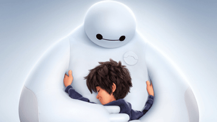
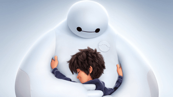

«Місто героїв»(англ. Big Hero 6; букв. Укр. Велика шістка героїв) - американський трьохвимірний комп'ютерний повнометражний анімаційний фільм 2014 року, створений студією випущений кінокомпанією «Walt Disney Pictures». Заснований на однойменних персонажах коміксів видавництва Marvel істотно відрізняється від першоджерела. Режисери - Дон Холл і Кріс Вільямс. Фільм удостоївся премії «Оскар» як кращий анімаційний повнометражний фильм